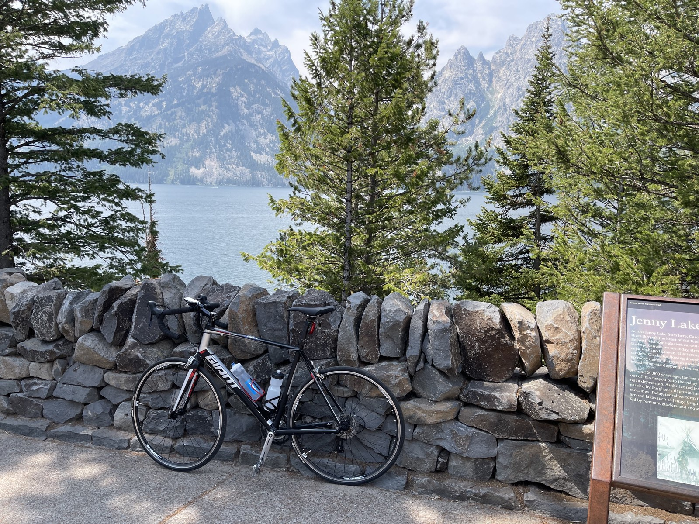
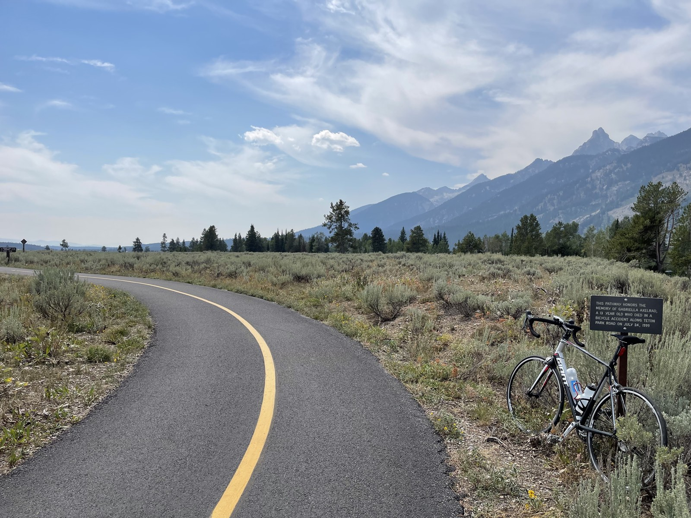
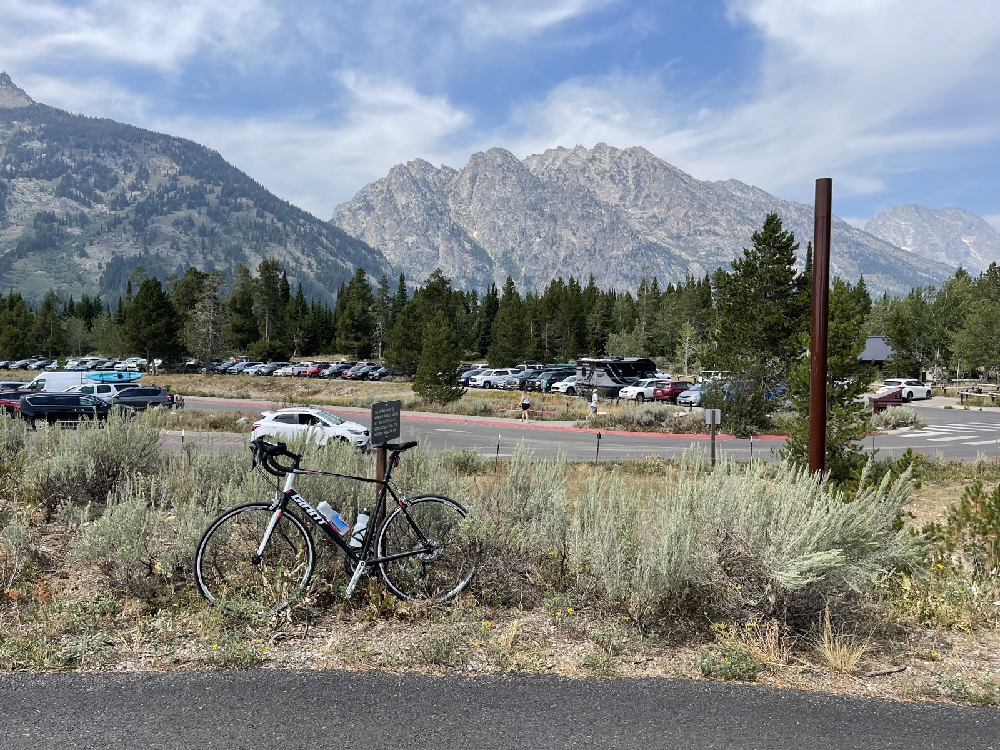

Grand Teton National Park has an incredible bike trail that starts at Jenny Lake and runs all the way to Jackson, Wyoming. The trail is paved and completely separated from the park road, making it a perfect way to explore the park. Heck, you could even bring your backpacking gear and turn it into a bikepacking trip. If you visit during the peak summer season as I did, though, be prepared for massive crowds on the trail.


